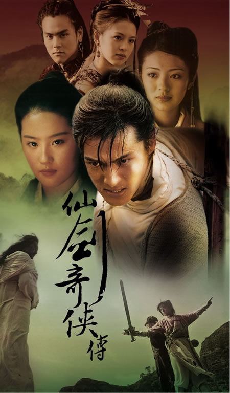
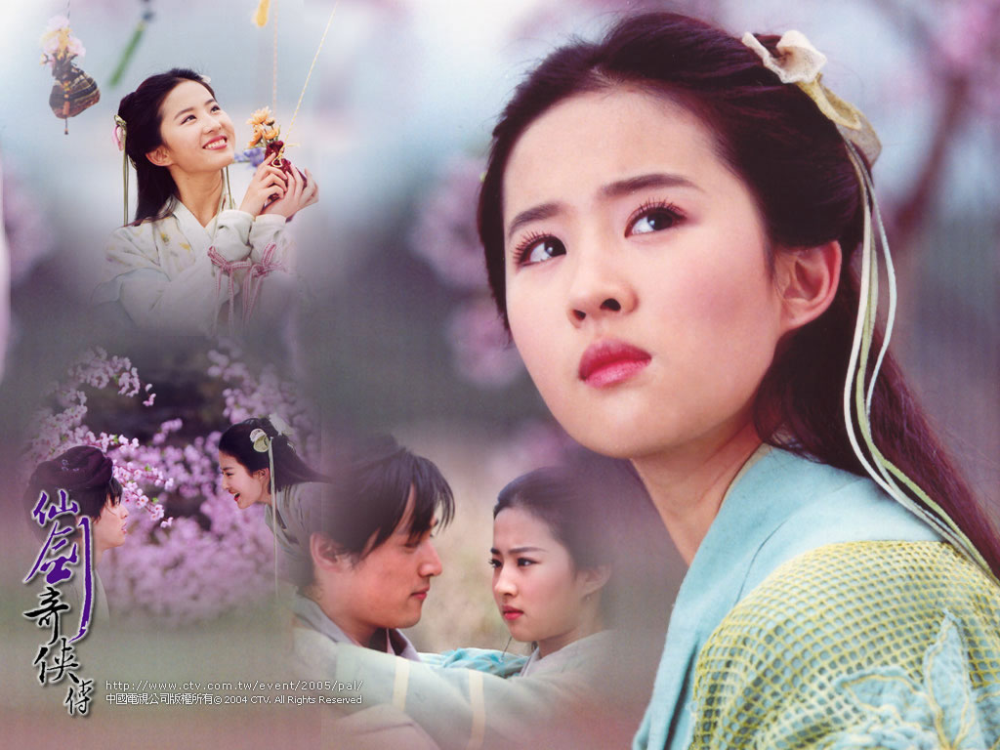
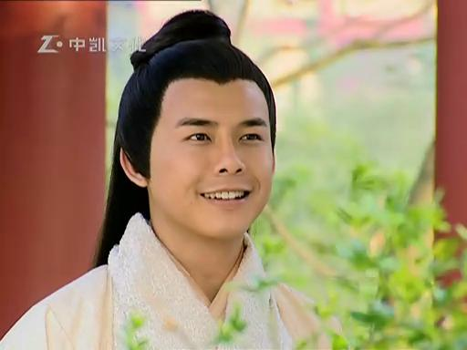

既不回头，何必不忘。既然无缘，何须誓言。今日种种，似水无痕。明夕何夕，君已陌路。
—仙剑奇侠传 I(游戏)
2014/04/27
清晰的记得，看仙剑一电视剧的时候是在初三，还在泾口一中的时候。初中时代每个星期周五下午上完课后骑自行车回家，然后星期天晚上回学校去上晚自习。一直到现在，在我为数不多的兴趣爱好中，看电视剧是我最大的一个爱好。现在很多印象深刻的电视剧都是在初中时代看的，比如蓝色生死恋、冬日恋歌、仙剑奇侠传。我没有玩过仙剑奇侠传的游戏，只是在看了电视剧之后才知道它原来是一款同名的DOS游戏改编而来的。说实话，第一次看到仙剑的时候，这部电视剧并没有吸引到我。那时候的我最喜欢看的就是韩剧，比如上面提到的蓝色生死恋、冬日恋歌之类的，现在想想都不禁菀尔一笑。后来参加中考，我们泾口的学生都分到了当时的莲塘三中去参加考试。但是自己一个人从泾口搬到莲塘，中考期间，在莲塘三中的学生宿舍住了2个晚上。毕竟面临中考，虽然那时候很懵懂，都不知道自己为什么要读书，也从来没有想过这个问题。但是，心中似乎总一直有一个声音在说：“你要好好学习，得到高分才是好孩子，才会得到爸妈的赞扬，得到老师的器重，得到同学的羡慕。" 在这样一个声音的驱动下，我一直学习很刻苦，成绩还算不错。那时候中考备考，就已经采用了题海战术了，每天不停的做题，不停的做模拟试卷，知道做到头昏脑涨，然后每天晚上10点钟回到宿舍睡觉，第二天继续这样的生活节奏。在中考期间，说实话，其实心情比较放松，空闲的时候找几个要好的同学到篮球场上散步、聊天。我那个年代，大概是在2002-2005年期间，泾口一中的实力还是很强的。在这三年期间，每年考到莲塘一中的人都有40-50个，在当时我们的老师一提到这个就表现的非常自豪。但是现在泾口一中渐渐地衰落了。原因很简单，现在农村的孩子越来越多的都去好学校上学去了，只有家境不好的家庭才会让自己的孩子在泾口一中上初中。今年春节的时候在泾口农贸市场遇到了自己初中的化学老师，但是我虽然认识他，他却不认识我了。我想起了上本科的时候胡宗福老师课堂上提的一个问题：世界上最强大的东西是什么？
当时他点了关响生来回答这个问题，关是我在本科期间唯一的一个好朋友。关当时回答说：强大？那要看你怎么定义强大了。这个...不太好回答。
关说的没错，强大
这个词可以有不同的定义，对于不同的定义每个人都会有不同的答案。但是胡老师当时说：好，你坐下吧。...世界上最强大的是时间! 因为时间可以改变一切，其他的东西都做不到这一点！
说实话，我当时对于胡老师的这个言论不以为然，认为他这是故弄玄虚，故作坚深。当时心里面还在窃笑：少扯淡了，好好上课吧，就你哲学...
但是，事实证明，我笑的其实是我自己，因为我现在不得不承认，胡老师的话是对的！
没错，时间早已在悄然之间改变了、改变着很多事情，他强大到足以让我的化学老师短短几年就足够把我忘了。当时看见他的时候，化学老师在泾口农贸市场开了一家文具店，我的一个表妹在他那里买了一个笔带，我还记得笔带上面写着:Nostalgia。我表妹是学英语的，她说：Nostalgia! 我知道她的意思，我笑着说：不错，认得几个单词嘛，英语没白学！ 然后，化学老师看到我们笑了，他也笑了。付钱的时候表妹想让我的老师少一块钱。我说：算了吧，就一块钱。我边说边把那一块钱递回给我的老师。可是临走之前，他还是没认出我来。从老师的店里出来之后，我表妹说：你怎么把那块钱又送回他了？我说: 他是我初中的化学老师，就当是给他抽了根烟吧，马上就要过年了。
回到上面说的中考，当时和几个要好的同学一起出来散步，谈心。本该精神紧张的两天竟然成了最美好、最快了的人生经历之一。当时一日三餐在莲三中的食堂吃，吃饭的时候食堂一直在播一部电视剧，那就是仙剑奇侠传的第一部！这是我第二次遇到它了，当时一边吃饭一边看电视剧。我到现在还记得当时是哪一集。印象最深刻的一集是这样的：拜月教主在树上欣赏夜景和休息，这时候阿奴跑了过来：拜月叔叔，你真厉害！你怎么睡觉都睡到树上去了，嘻嘻。
拜月说： 因为这上面的风景很好，要不你也来试试？
说着拜月用内力把阿奴拉到了树梢上。阿奴很高兴，这个时候的阿奴还以为拜月是一个很可爱的叔叔，并不知道他是一个深谋远虑的野心家，正在一步步的向着他的灭世计划迈进！说实话，我当时和阿奴一样，没看懂整个剧情到底在讲什么。在考试期间的两天看的内容又有限，很难看出什么大的变化。
于是我的初中生涯就伴随着这一部没看完也没看懂的电视剧结束了。同时意味着，我不得不和那些要好的朋友分开了。后来中考成绩出来了，我至今都记得我不多不少刚好考了530分。我的人生因这一个数字进入了一个新的阶段。我考上了莲塘一中，并且进了莲一中的重点班。当然，我当时并不是整个泾口一中的第一名，大概只是第四名的样子。我那一届，泾口一中有50多个学生都考上了莲塘一中，那一年是泾口一中历史上最辉煌的一年。作为一个农村初中，能够取得这么好的教学成果确实是很难得的。
后来九月分来到了莲塘镇，来到了莲塘一中，看到了各种各样的人。高中期间，偶尔也再见过几次有些电视台在播仙一，但是高中学习压力比较大，最终还是没能在高中看完它。
后来考上了大学，一个从未走出过县城的人突然之间来到了大都市上海，说实话，刚入学的那段时间我感到很自卑，甚至是恐慌。作为农民，爸妈也从来没去过什么大城市，但是因为我他们也来到了这个陌生的城市。人生的际遇竟是如此的戏剧化，都说人生如戏，其实一点也不为过。如果我当初没有考上同济，我无法想象现在的我会在哪里，会在干什么，是在继续上学还是早已经工作了，甚至已经成家了，不敢想象。爸妈在上海陪了我两天，入学手续办完之后,他们不得不离开我回家了。我现在还记得那天在同济大门口和爸妈告别的场景，我当时强忍着没哭，可是等他们走远了，我再也忍不住了。我哭了起来，可是没有任何人知道，顿时感到这个城市虽然很多人，但是它让我感到彻骨的寒冷。更远了些，看到我妈的背影也在用衣袖擦眼泪。我低着头哭，以免被别人发现，然后迅速的找一个没人的地方躲起来, 以免引起别人的注意。
后来大学四年，努力学习，也取得了很好的成绩。但是始终不知道自己为什么要这么做。直到大三的时候，我突然意识到，我不能和别人那样庸俗的过一辈子，我不能成为一个普通人。我终于知道自己初中时代的那个内心的声音是什么了。那就是我要追求美，金庸的小说很美，电视剧也很美，我的童年记忆很美, 理论和技术也很美。但是我肯定做不了金庸，我只能追求理论和技术，做一个真正做学问的人，研究也是一门艺术。于是我决定要继续读研究生了。这个想法确立以后，我更加的刻苦学习了，因为我不能让这个梦破碎。 后来本科四年也很快就过去了，我一直很奇怪为什么人会随着年龄的增长对时间的体验越来越迟钝，觉得时间的流速越来越快了。
仙剑一其实是我在大三的一个暑假在家里看完的。当时暑假一个人在家没事情，于是就找了一些电视剧来看，其中就包括仙剑一。重看仙剑一，终于知道里面讲的是什么了，感触繁多。它其实讲的是一个凄美的故事，一个关于爱与杀戮的故事。拜月教主，也就是石杰人，他其实也是一个值得同情的人。因为他心中没有爱，更不相信爱。这缘于在他年轻的时候他的义父，也就是唐钰小宝的师傅和义父：石长老是一个典型的严格的父亲，不会鼓励孩子，相反他只会用暴力去惩罚犯错的石杰人。长期在这种环境下成长的拜月失去了对爱的信仰，变得冷漠无情，甚至冷血。阴暗的童年经历铸就了这个绝世天才，但是他却是一个价值观严重扭曲的天才！ 不得不说，拜月其实是一个很好学的人，他学识渊博到了竟然知道地球是圆的！这是因为李逍遥通过女娲（也就是赵灵儿的母亲）的五颗灵珠回到十年前，想要避免这个悲剧的时候金凤凰绕了一圈又回到了仙灵岛。但是李逍遥不知道地球是圆的，更不知道他竟然回到了仙灵岛！虽然这不符合事实，因为南诏国是唐朝时期的一个边垂小国，位于现在的云南。而唐朝在公元600-900之间。而西方的哥伦布发现新大陆却是在公元15世纪，麦哲伦环球旅行就更晚了。因此拜月是绝无可能通过饱读文献记录来知道地球是圆形的。但不管怎么样，这都说明了拜月是一个聪明又好学的人。可是拜月错在这个世上有刘晋元的存在，也就是阿七。李逍遥笑话刘晋元走路每走七步都要停一下（长期读诗留下的习惯），于是给他取了这个绰号。但是，尽管如此，阿七才是整个故事中唯一有能力与拜月抗衡的人，不是因为他的武功高，而是因为他的大智若愚！
阿七利用不死劫
短暂的骗过了拜月，尽管后来被聪明的拜月识破了。拜月杀了阿七的父母，阿七为了报仇，更为了阻止拜月进一步为了实现他的灭世计划杀更多的人，他忍辱负重来到拜月身边做卧底。做卧底的目的是为了发现拜月的弱点，阿七聪明的地方就在这里，因为任何一个人都是有弱点的。要想从武功上击败拜月是绝无可能的，因为拜月的武功早已经到了登峰造极的程度。阿七在拜月身边通过观察终于发现了人面吊坠的秘密：只有人面吊坠才能打败拜月！阿七虽然看上去是个文弱书生，但是最后如果没有阿七，拜月肯定会达到他的灭世计划：将世界上愚蠢的人全都消灭掉，只留下像他那样的聪明人，留下那些和他一样不相信爱、价值观扭曲的人。他欣赏阿七就是因为阿七很聪明。
可是，最后虽然有人面吊坠，还是有很多人牺牲了。其中包括赵灵儿，但是我最同情的是阿七，因为他的善良，哪怕是对待妖也一样，还有他的大智若愚。其次是阿奴和唐钰小宝，因为他们是无辜被牵连的，最后才是女主角赵灵儿，因为身为女娲后人，有义务去为了人类牺牲，这是光荣的使命！
我想起了阿七考上状元后去各地考察期间，在路上遇到赵灵儿时候的那首莫望莫失
...
拜月最后被打败了，在最后一刻，他感受到了爱的存在，流出了一滴泪。其实他也是很值得同情的人，因为这一切其实并不完全都他的错，他只是被仇恨和童年的阴影蒙蔽了眼睛和心智。纵观整个故事，其实并没有反派人物与正派人物之分，所有人都是好人，都值得同情，因为他们都受过伤害。每个人有他/她的宿命、责任、义务、乃至最终的归宿。一切都是冥冥之中早已注定，不可更改。就像蜀山剑侠所说的那样。整个故事闹来闹去，其实都是一场空，因为所有人都是受害者，这也注定了这个故事是一个悲剧。
仙剑奇侠传，是一个童话，但却是一个悲剧童话，并不像安徒生童话末尾的那句：王子和公主从此过上了幸福的生活...